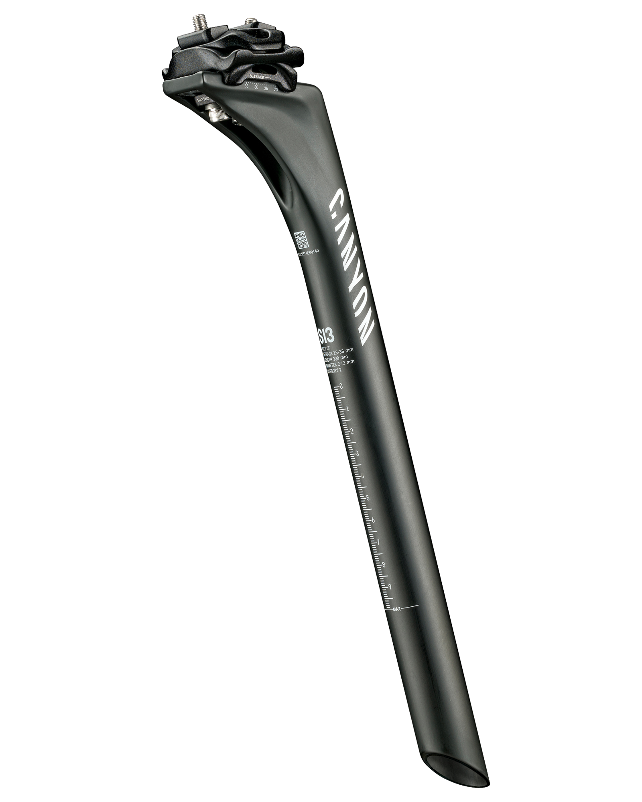

A bicycle seatpost, seatpin, saddlepole, saddle pillar, or saddle pin is a tube that extends upwards from the bicycle frame to the saddle. The amount that it extends out of the frame can usually be adjusted, and there is usually a mark that indicates the minimum insertion.